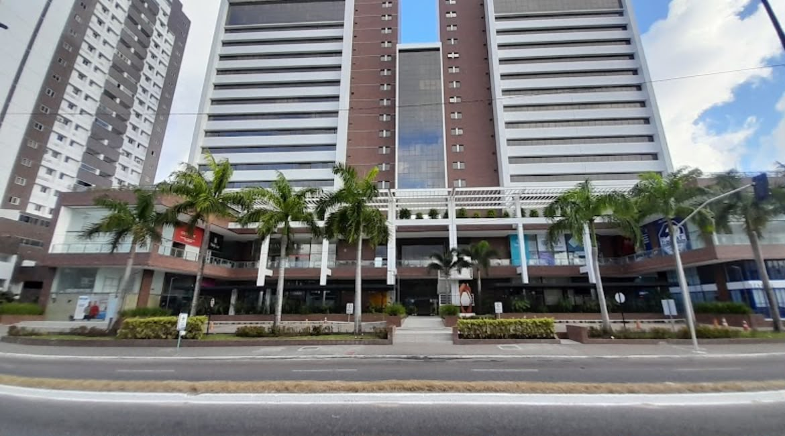
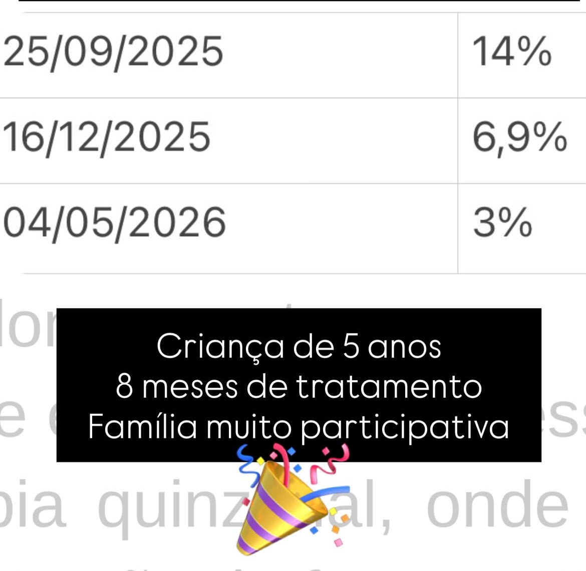
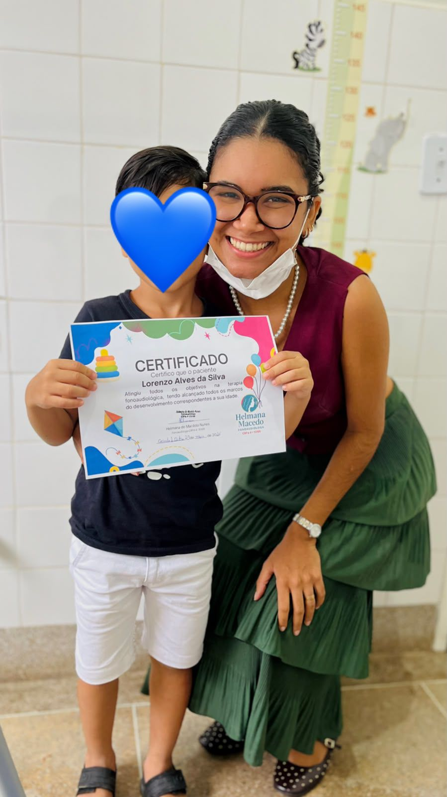

Olá! Sou Helmana Macedo, fonoaudióloga pela Universidade Federal da Paraíba. Te proporciono um atendimento de alto padrão, humanizado e com prática baseada em evidência científica.
Crianças com atraso de fala, trocas na fala, transtornos do neurodesenvolvimento, gagueira, disfunções orofaciais e lesões vocais.
Adultos com transtornos do neurodesenvolvimento, gagueira, disfunções orofaciais, lesões vocais ou atendimento de performance vocal.
Consultorias e treinamentos de comunicação para pessoas e empresas.
R. Empresário João Rodrigues Alves, 125 - Bancários, João Pessoa - PB, 58051-022

Esse paciente iniciou a terapia com 1 ano e 5 meses falando pouco mais de 5 palavras. 3 meses depois, com 1 ano e 8 meses já tinha atingido o marco do desenvolvimento para 2 anos, falando 200 palavras. E esse foi o feedback da mãe alguns meses depois
Em 8 meses de tratamento, muita prática baseada em evidência científica, constância e participação família, diminuímos consideravelmente a porcentagem de disfluências típicas da gagueira.

Em média 5 meses de tratamento e um rapaz com o repertório fonológico 100% organizado. Realizou todos os exercício, se empenhou e alcançou a alta!

Eu e a Fonoaudióloga Bárbara Carolina preparamos um Ebook gratuito como PRESENTE para você, mamãe, papai ou cuidador. Nele, você descobrirá os primeiros passos para estimular a fala do seu bebê. Em breve virá a continuação desse projeto com estratégias mais avançadas. Clique abaixo e aproveite.
Baixar E-book Grátis